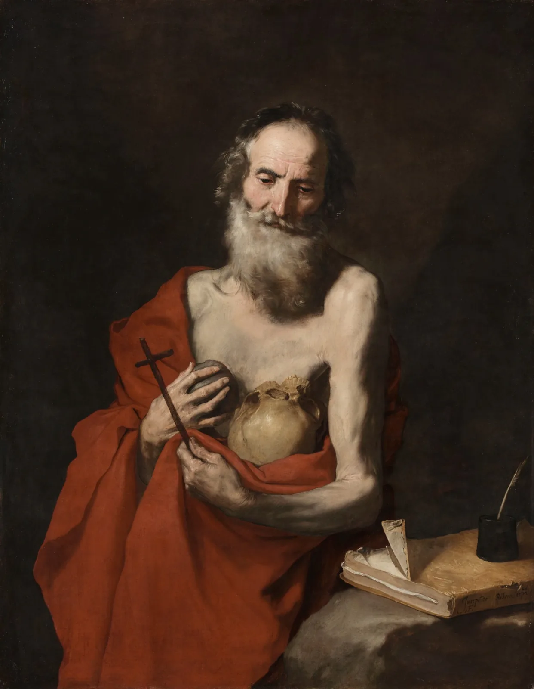

Clube Íntegros · reabertura do acervo
Você trabalha mais do que quando era CLT. E o negócio continua não fechando.
Existe uma razão, e ela não passa por você ser desorganizado. O Clube Íntegros guarda o método que mostra onde a conta quebra e como refazê-la: todas as aulas, todas as gravações, atualizado a cada quinze dias.
Por Kevin Eger, fundador da Íntegros
